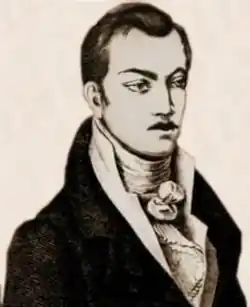
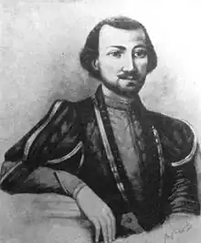
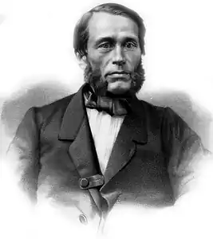

БАРАТАШВІЛІ, Ніколоз Мелітонович (27.12.1817. Тбілісі — 21.10.1845, м. Гянджа) — грузинський поет-романтик.Бараташвілі народився у збіднілій князівській сім'ї. Після закінчення у 1835 р. Тифліської гімназії служив чиновником в Експедиції суду та зборні. Він мріяв про військову кар'єру, але в дитинстві невдало впав з коня, зламавши собі обидві ноги; хотів навчатися у Петербурзькому університеті, але матеріальна скрута і необхідність утримувати матір і сестер змусили його відмовитися від цієї мрії. Бараташвілі, як свого часу Е.Т.А. Гофман, жив немовби подвійним життям: зовнішнім — життям світської людини з репутацією скандаліста, жартівника, гуляки та дотепника, завсідника балів і гулянок у Тифліських банях і внутрішнім — напруженим життям поета, тонкого лірика та філософа.
Життєвий шлях Бараташвілі бідний на події: півроку він провів у Нахічевані; помер у Гянджі, де прослужив кілька місяців помічником начальника повіту. Згідно з офіційним повідомленням, 28-річний поет помер від злоякісної пропасниці.
Духовна драма Бараташвілі — це трагедія людини, народженої для повнокровного, активного життя, але фактично приреченої на бездіяльність. Поезія Бараташвілі побудована на гострому драматизмі, постійній тривозі, глибокому внутрішньому неспокої. Ідея та матерія, мрія та дійсність перебувають тут у трагічній суперечності. Бараташвілі був справжнім революціонером грузинської поетичної форми. Як художник і мислитель, він спрямовував літературний розвиток Грузії упродовж усього XIX ст. Творча біографія Бараташвілі займає порівняно невеликий часовий відрізок (1833—1845) і текстовий об'єм — 27 ліричних поезій і поема. Першим яскравим проявом його поетичного генія слід вважати вірш "Сутінки на Мтацмінді" (1833— 1836). У настрої "Сутінків" найголовніше — романтична піднесеність, звільнення від земних турбот, духовне залучення до одвічних потаємних земних сил. "Дума на березі Кури" (1867) — перший вірш Бараташвілі яскраво вираженого філософського характеру, у якому висловлюється погляд поета на людину як на "сина землі" (тобто на громадянина). Основний стимул діяльності, "трудів і клопотів" людини поет вбачає у невтомному духовному пошуку, у сильних титанічних пристрастях, у невичерпності людських бажань. Несумісність високих людських прагнень із тим реальним становищем людини, на яке вона приречена об'єктивними умовами свого часу, стає джерелом конфлікту з реальністю, а також хворобливого відчуття "безпритульності" і "духовного сирітства", що є лейтмотивом ряду віршів Бараташвілі. ("Таємничий голос". 1836; "Самотня душа", 1839 та ін.). Кохання в уявленні поета — не проста мить плинного земного щастя, а вічний духовний союз. Бараташвілі, як і Данте у "Новому житті", — в одвічних пошуках "втраченої пори". Лише зі спорідненою душею, високою і чистою, як і душа поета, він міг поєднатися і зазнати щастя ("Я пам'ятаю, ти стояла у сльозах...", 1840; "Що дивного, що вірші я пишу!", "Знайшов я храм в пісках...", 1841 та ін.). Багато ліричних творів поета навіяні його нещасливим коханням до однієї з найвродливіших жінок Грузії тих років — Катерини Чавчавадзе, дочки поета Олександра Чавчавадзе, яка, проте, віддала перевагу заможному князеві. "Злий дух" (1843) — вірш, який відтворює трагедію "зневіреної розумом" особистості. Розум, уміння тверезо мислити постають тут як зле начало: воно позбавляє душевного спокою, отруює чисті помисли поета і нічого не дає душі навзамін: Ти, злий духу, тікай і навіки облиш мене:Що я вартий тепер, як чуття моє знищене.Як зневірився ум і душа стала ницою?Горе людям, яких ти торкнувся десницею!(Пер. І. Кулика)Злий дух у Бараташвілі, як і Люцифер Дж. Н. Ґ. Байрона, — теж дух печалі. Його ваблива сила руйнує, знищує все, що створювало ілюзію спокою, внутрішньої гармонії. Дати навзамін щастя він не в змозі, а свобода, яку він обіцяє своїй жертві, залишається пустослів'ям. Та історично сформована форма людського розуму, яку романтики, починаючи з Байрона, вкладали у цей символічний образ. — раціоналістичні ідеали попередньої епохи, тверезий критицизм, в очах Бараташвілі стає даремною, безплідною властивістю людини. Бараташвілі часто перегукується з поетами "світової скорботи" і постійно повертається до вічних, "проклятих" питань історії людства. Трагічна невлаштованість всесвіту переповнює душу поета невимовним болем, але першопричина його душевної драми криється все ж таки у національній дійсності. Поема "Доля Грузії"("Беді Картліса", 1839) — своєрідний ключ до пояснення складного змісту світоглядницьких пошуків Бараташвілі. В основу сюжету поеми покладено реальну подію — взяття Тбілісі у 1795 р. іранським Ага-Мухамед-ханом, що фактично вирішило майбутнє Східної Грузії. Але як поет-романтик, Бараташвілі у "Долі Грузії" не дотримується принципів історизму. Національна проблематика поеми помітно модернізована. Суперечка царя Іраклія та його радника Соломона Леонідзе про подальшу долю Грузії за своїм змістовим наповненням належить до подій нового, XIX ст. Проте концепція "Долі Грузії" не вичерпується цим конкретним аспектом. Національно-історична проблематика тут узагальнена і постає в аспекті філософському, загальнолюдському. У поемі Бараташвілі дві основні теми, два лейтмотиви, через протиставлення, переплетення яких передається боротьба двох ворожих начал — долі та щастя, необхідності та свободи. 23-літній автор "Долі Грузії" ще не формулює відповіді на те питання, яке постало перед грузинською дійсністю у 30—40-х pp. XIX ст. Питання, поставлене в поемі, як і основна філософська альтернатива всієї творчості поета, вирішується лише в "Мерані" — шедеврі філософської лірики Бараташвілі. Головна ідея "Мерані" — безкомпромісна боротьба творчого духу і розкріпаченої волі зі силами сліпої необхідності як виправдання та справжній смисл історії людства. Оптимістичне звучання твору визначається не надією на втілення ідеалу. Його рушійною силою є усвідомлення того, що людина покликана до самовідданої, героїчної боротьби заради досягнення цієї мети. Вершник Мерані приречений на поразку, його ідеал недосяжний, проте: Так, ці пориви гордої душібезплідно й марно в світі не минуть.Мерані мій, лишиться на земліпротоптана тобою славна путь,І після мене послідовник мійвже легше пройде ці тяжкі дороги, І, не жахнувшись, пронесе йогокрізь чорну долю огир прудконогий.(Пер. М. Бажана)Віра у перемогу та торжество майбутнього "послідовника", віра в оновлення, одвічне прагнення вперед, — такою є декларація гуманізму, любові до ближнього, проповідником якої став автор "Мерані". Видатний поет-романтик Ніколоз Бараташвілі помер у Гянджі, його прах у 1893 р. перенесли у Дідубінський пантеон, а в 1945 р. — у Мтацміндський пантеон у Тбілісі. Але й сьогодні, як і вчора, звучить поетичний заповіт найвидатнішого романтика Грузії: Вмру я, — хай сльози печальні родиниТіло моє не омиють, та доситьДумки, що небо, глибоке і синє,Тіло сльозинками синіми зросить.Хай же, коли у блакитнім туманіЗникне могила, у безвість порине, — Буде тобі це офіра останняСинього неба колір мій синій!("Блакитний колір", пер. І. Кулика)В Україні перші переклади поетичного доробку Бараташвілі були зроблені П. Грабовським, Б. Грінченком і С. Палієм у 1897—1909 pp. Увесь спадок поета в інтерпретації І. Кулика вийшов друком окремою книжкою у 1936 р., а в 1968 р. була видана книжка Бараташвілі "Поезії" за редакцією та з передмовою М. Бажана. За Г. Асатіані та Г. Абашідзе